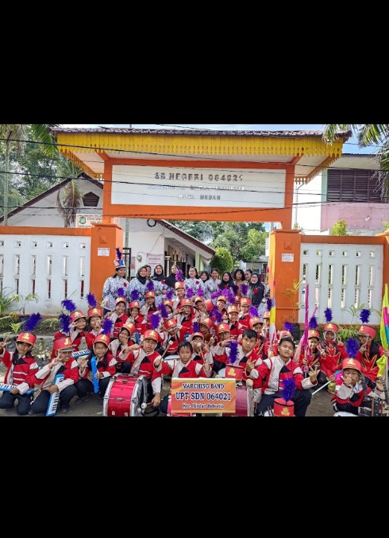
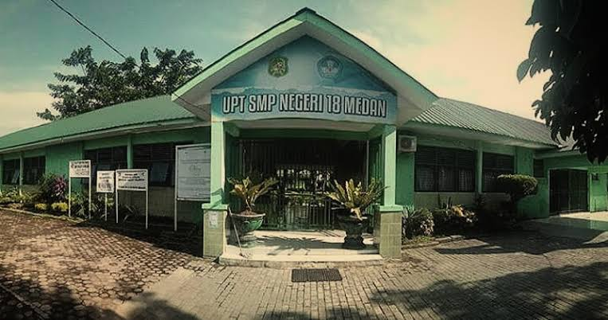
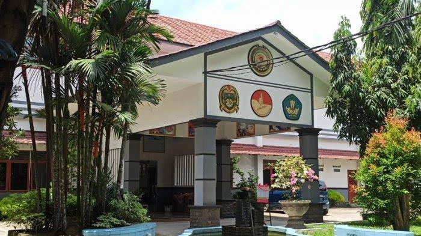

Personal
class="featured-image" />
Cyntia Saragih adalah seorang individu yang lahir dan besar di Kota Medan. Sebagai anak ke-Dua dari tiga bersaudara. Cyntia tumbuh dalam lingkungan keluarga yang penuh harapan akan dirinya. Cyntia suka hal hal yang memerlukan kreativitas seperti mendengarkan lagu dan aktivitas lain sebagainya.
Pendidikan
class="featured-image" />
- SMKN 9 MEDAN
- SMPN 18 MEDAN
- SDN 064021
Pengalaman
pengalaman semasa sekolah sangatlah indah, karna pada masa SMK saya memiliki banyak teman dan Kepercayaan diri saya meningkat sejak saya masuk SMK, saya masuk ekstrakurikuler PMR sebagai penambah ilmu diluar kelas.
SDN 064021

Pengalaman saya dimasa sd cukup sedikit, karena saya yang takut ditempat umum dan saya adalah orang yang pemalu kala itu.
Namun, saya mempunyai satu guru yang sangat saya suka pada saat itu. Karena beliau adalah guru yang tekun dan disiplin dan dari situlah saya pernah bercita-cita menjadi guru kala itu.
SMPN 18 MEDAN

Masa-masa SMP saya juga tidak terlalu menarik bagi saya secara pribadi, karena adanya virus corona yang membuat semua sekolah harus "sekolah daring".
SMKN 9 MEDAN

Menjadi siswa dan mengambil jurusan di REKAYASA PERANGKAT LUNAK
Selama saya belajar di SMK di jurusan RPL, saya terlibat dalam beberapa proyek menarik. Salah satu yang paling berkesan adalah saat kami ditugaskan oleh guru kami untuk membuat website weeding. Kami mulai belajar banyak hal baru, mulai dari perancangan antarmuka, pemrograman, dan yang lainnya pengerjaannya memang cukup menyulitkan, tapi rasa puas yang saya dapatkan saat aplikasi berhasil berjalan sangat luar biasa. Dari proyek ini, saya belajar tentang pentingnya kerja sama tim
Contack
Untuk Mengenal Lebih Lanjut dengan saya dapat dihubungi pada akun media sosial berikut ini :
- WhatsApp
- Instagram
- Github